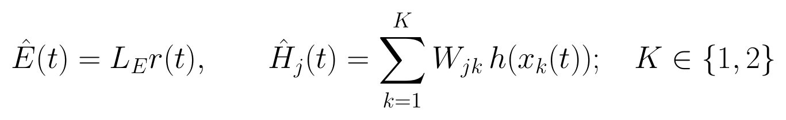
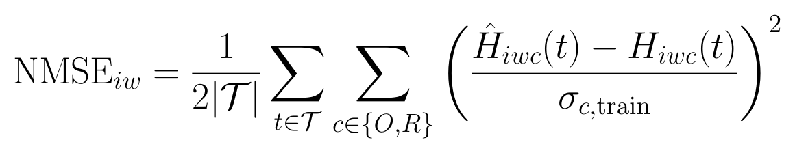
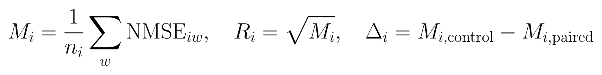
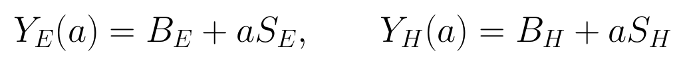
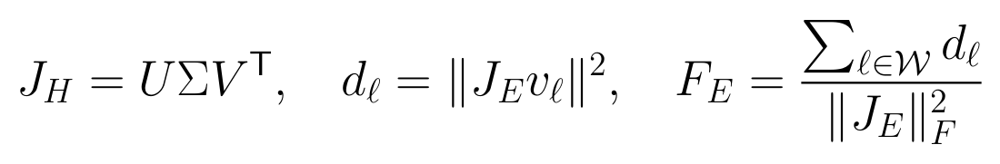
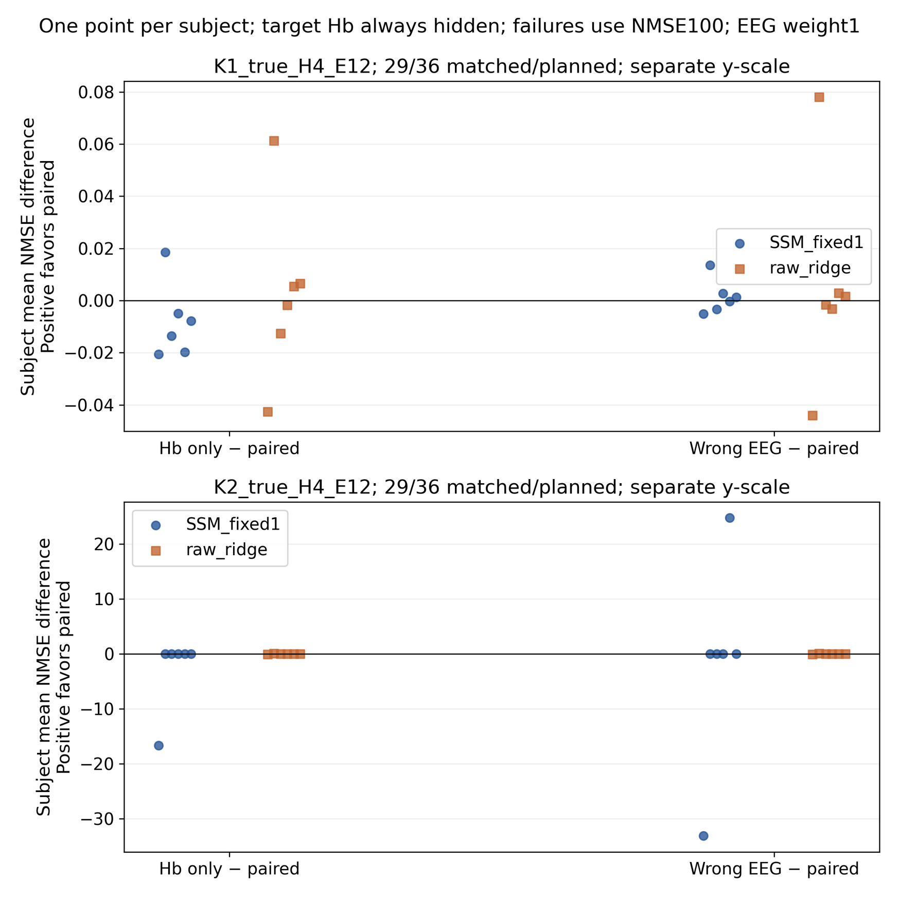
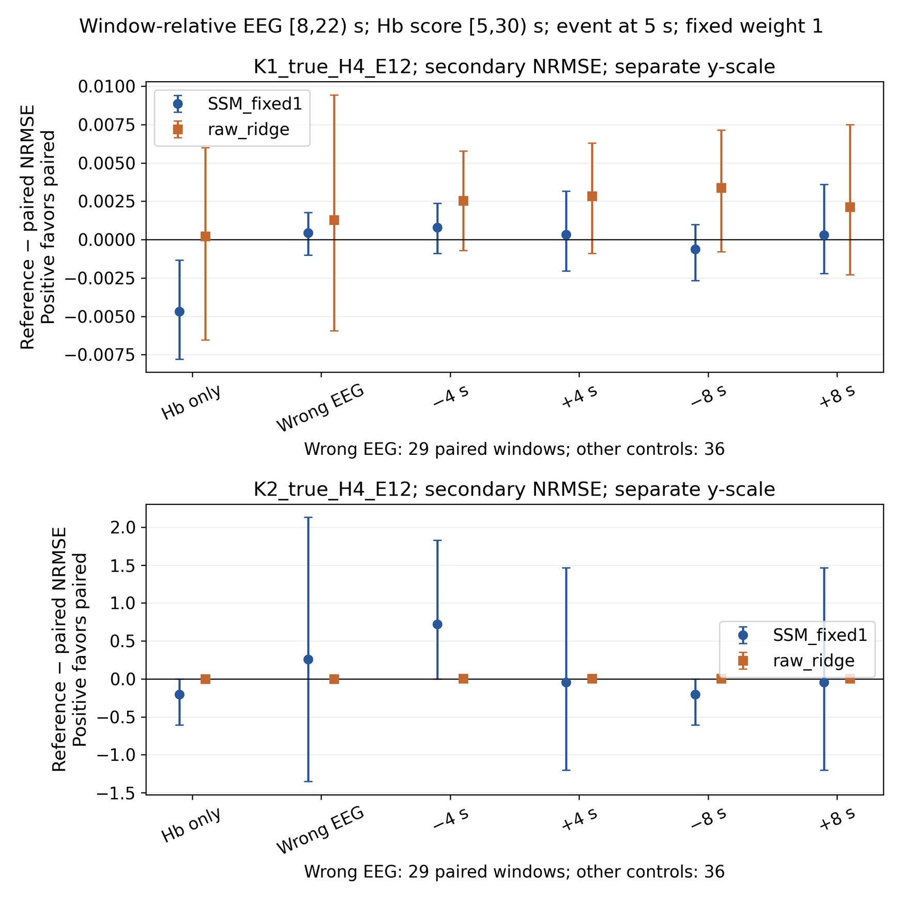
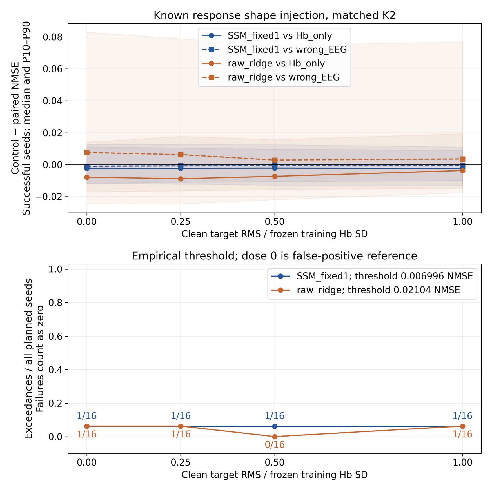
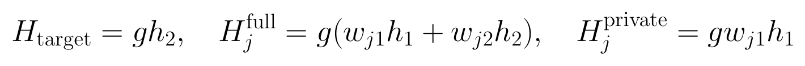
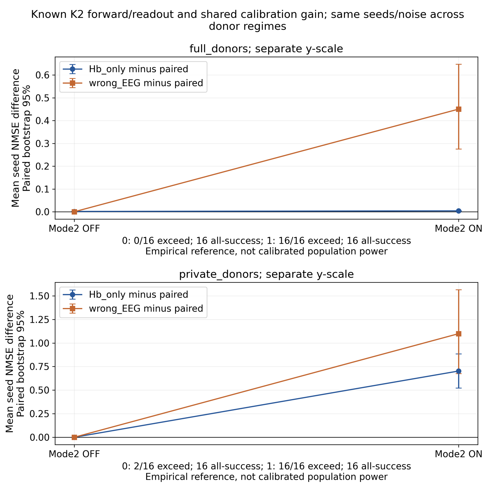

固定公开开发面板的新配对扰动、训练背景注入与条件信息定位
2026-10-21
数值事实由本套件的 summary.json、固定任务计划、逐单元结果与验证记录持有。本文件仅为技术报告内容，不是第二份执行状态。
保留来源：shared_driver_spatial/20261020_measured_v2；仅使用该公开开发实验的明确 prepared 数据、训练坐标、训练读出和既定身份；不读取原始或其他协议的受保护数据。
在相同二十九个可错配窗口、六名被试上，固定 EEG 权重后的 K1 未同时优于 Hb-only 和相容错误 EEG。两项主 NMSE 改善分别为 -0.00803 与 0.00146，95% 描述区间均跨零；原选择策略的零 EEG 权重没有被当作这次独立检验。
K2 的完整分母结果受数值失败明显影响，不能从少数成功曲线推断更多独立生理动态。原训练背景注入从 0 增至 1 个训练 SD，SSM 的计划分母经验检出数始终为 1/16，没有建立剂量灵敏度。
独立版本的条件信息阳性控制全部 288 次拟合成功：当目标第二动态在 Hb 供体中不可见、却由已知 EEG 读出可见时，ON 条件 16/16 越阈，Hb-only→正确 EEG 的平均 NMSE 为 0.98509→0.28254。完整供体也有小幅去噪增量，约小 175 倍；新阳性不覆盖原实测背景的无灵敏度。
本轮负结果说明当前特征、冻结读出、Hb 供体条件与求解策略未建立独立 EEG 增量；它不能证明 EEG-fNIRS 无耦合，也不能给真实共享动态幅度设上限。共享信号存在与在 Hb 供体之外增加条件信息是两个不同命题。
本报告区分四个问题。拟合误差问模型能否重现给定观测；可辨识性问近乎相同的观测能否由不同参数或分量解释；模型失配问真实生成过程是否位于候选模型的表达范围内；数值优化问求解器是否到达其声明的收敛标准。四者需要不同证据，不能由一条平滑曲线或一个很小的残差代替。
同一观测可以通过改变驱动、血管初态、响应参数与结构化额外项得到相近预测。正则项能够选出其中一条更平滑、更接近参考状态的解，却不自动增加来自观测的独立信息。反过来，优化失败也不能直接证明数学上不可辨识：失败单元首先是数值证据，必须保留并在比较分母中显式出现。
本组实验把预测效用与生理恢复分开评价。真实数据只有隐藏观测评分及稳定性证据，没有可直接比较的真实神经驱动、转运时间或浅表成分。已知真值的合成数据可以评价恢复误差，但其结论依赖生成模型、信号强度、背景和观测算子。
关键比较不是把联合拟合与 Hb 单独拟合的可见残差相减，而是完整隐藏目标 HbO/HbR 对，在相同 Hb 供体、相同 EEG 可见支持与冻结参数下，检验正确配对 EEG 是否优于错误配对 EEG，并同时优于仅 Hb 供体。前者检验具体时变配对关系，后者检验增加 EEG 后是否有实际预测收益。
上一空间实验的 K1 选择策略可将 EEG 权重选为零。此时正确、错误和省略 EEG 的预测相同是算法定义的结果，不能作为经过有效 EEG 检验后的阴性发现。本套件将正权重统一固定为 1，专门检验原训练读出在使用 EEG 时提供的信息；原选择策略只作历史背景。
这里的目标是处理后特征的离线补全。全部可见 Hb 供体与允许的 EEG 特征来自当前完整窗口；既不声称实时预测，也不把隐藏目标作为唯一生理真值。隐藏实测值仍含未辨明来源与测量误差。
沿用 Single-Trial 的局部前额面板：四个真实 Hb 对、十二个 EEG 通道，每通道五频带。评价包含六名被试、三十六个窗口。目标为面板中冻结的第零个 Hb 对，整个时间段与目标自己的光学／Hb 参考不进入推断；目标参考仅用于离线评分坐标。供体与目标光极分离不等于组织敏感度彼此独立。
训练坐标、空间核、EEG 带符号读出与线性 ridge 均冻结自保留训练分区。本套件不按评价误差选择权重、重新拟合读出或改变目标位置。同被试的多个窗口属于依赖观测，统计先在被试内汇总。错误 EEG 供体沿原计划，匹配被试、任务、条件和 montage，并要求原生时间支持不重叠；缺少供体时保留 unavailable，不选择较宽松对象替代。
原实验错误 EEG 可用于二十九个评价窗口，另外七窗无相容供体。所有真实对错误配对比较限制在同一可用身份集合，并同时列出完整计划分母。三十六窗真实配对的边际均值不能直接与二十九窗错误配对均值相减。
K1 含一个共享驱动与一套守恒 Balloon 血管状态；K2 含两条驱动与两套独立传播、共享响应参数的血管状态。Hb 在传播后按固定空间权重混合，EEG 由固定空间核及训练拟合的频带系数读取。两条驱动先平均再通过一个非线性 core 并不是本轮的 K2。

E 为十二通道乘五频带的参考后 log-power 特征；H_j 为第 j 个 HbO/HbR 对；r 是 K 维驱动；x_k 为第 k 套血管状态。L_E、W 与响应参数冻结，当前窗口拟合驱动时间系数和各 core 的五个初态。该 EEG 读出不是电位 lead field，也不是独立代谢标定。
相同参考算子同时作用于模型与目标。尺度为保留训练坐标的 SD，不是每窗自身 SD，也不是独立测得的传感器噪声。HbO/HbR 保留共同正缩放；本轮不改变两色团幅比以改善单项指标。
| 条件 | EEG 输入 | 解释 |
|---|---|---|
| Hb-only | 无 EEG；权重 0 | 检验 Hb 供体自身的补全能力 |
| paired | 正确 EEG；权重 1 | 待检验的真实配对 |
| wrong EEG | 冻结的同条件非重叠记录；权重 1 | 破坏具体配对关系 |
| -4、+4 秒 | 已参考 EEG 特征非环绕移位；权重 1 | 扰动局部时间对应 |
| -8、+8 秒 | 已参考 EEG 特征非环绕移位；权重 1 | 更强时间对应压力 |
每个 K 模型均使用同一冻结面板、同一目标及预算。
统一模型网格为 120 个位置，间隔 0.25 秒。所有正权重条件仅看索引 [32,88) 的 56 行 EEG，即 [8,22) 秒；移位读取对应的源特征行，不环绕、不补零、不外推。正确和错配条件也限制到完全相同的 EEG 支持，因此差异不来自可见 EEG 长度。Hb 供体保持全部允许支持，目标评分为 [20,120)，即 [5,30) 秒。
所有上述秒数以窗口起点为零。窗口从事件前五秒开始，事件锚点在窗口第 5 秒，因此 EEG 输入 [8,22) 秒对应事件后 [3,17) 秒，目标评分 [5,30) 秒对应事件后 [0,25) 秒。图中坐标不能被误读为直接以事件为零。
这些移位作用于已经参考的处理后 EEG 特征，参考值也继承于原窗口。它们是特征空间配对扰动，不是重新估计仪器时钟、更正生理延迟或模拟原始连续传感器时移。即使某一移位更好，也只提示固定读出与当前条件不充分，不能据此发布个体神经血管延迟。
训练空间 ridge 与 EEG＋供体 ridge 使用同一允许信息作为预测参照。若联合 ridge 在无可见 EEG 的行改用空间 ridge，必须把它标为冻结的组合预测器，并在图注说明切换支持，不能把评价目标用于填补 EEG。

i 为被试，w 为该被试窗口，c 为 HbO/HbR，T 为固定 [5,30) 秒评分支持。σ 来自冻结训练数据。不同方法使用同一目标、支持和分母。

正的 Δ 表示正确配对更好。先限制同一比较的共同可用窗口身份，再在被试内平均 NMSE。每个被试的 NRMSE 为平均 NMSE 的平方根；不能先逐窗取根后再称相同指标。主统计不由不同分母的边际 NRMSE 均值相减。
主比较为 paired 对 wrong EEG、paired 对 Hb-only，联合主判断将两项均限制在同一二十九个错配可用窗口。两者都支持改善才可称当前设定下 EEG 提供独立且有用的信息；仅有其中之一不足。另保留全部三十六窗的 Hb-only 对照。主族进行两个比较的 Holm 校正；时间移位是次级压力，不从四个 lag 中挑最有利者。被试块 bootstrap 和精确双侧符号翻转以被试为独立单位，六名被试限制区间精度与检验分辨率。
数值失败使用冻结 NMSE=100 惩罚并列入完整分母，另列共同成功敏感性。unavailable 错配是缺少合格供体，不按数值失败罚分，但必须记录其七窗分母。成功子集不能掩盖较复杂模型的失败。
合成部分只使用训练记录构建背景：完整 HbO/HbR 与空间通道共享同一记录混合权重，保留其联合结构；EEG 使用独立且不重叠的训练行及独立权重，避免通过背景构造预置 EEG–Hb 配对。每个生成身份的背景与噪声跨剂量固定。评价身份与阈值校准身份互斥。

B 为训练记录混合背景，S 为独立生成的 K2 非线性共享响应，a 的取值使隐藏目标干净响应 RMS 对应 0、0.25、0.5、1 个训练 SD。相同 a 同时作用于完整 EEG 与 Hb 响应。该加性注入是工程检出实验，不是对原生绝对生理参数作标定。
K2 真值生成并由 K2 拟合，比较 Hb-only、正确配对与独立驱动及 EEG 背景构成的错配。目标 Hb 与 Hb 背景保持不变；错配仅破坏 EEG 信息。零剂量是阴性对照，较大剂量是阳性灵敏度检查。合成检测能力只直接适用于 K2 及当前生成机制，不能自动覆盖 K1 或其他真实耦合机制。
在十六个独立校准身份的零剂量条件，逐身份计算“相对 Hb-only 的 NMSE 改善”和“相对错配的 NMSE 改善”二者最小值。阈值为这些全部比较成功身份的经验第 95 百分位数与 0 的较大者；评价身份只有严格超过阈值才记为检出。阈值、校准成功分母、评价零剂量越阈数和失败必须同表。有限的十六个校准与十六个评价身份不能建立名义 5% 假阳性控制或人群功效。报告使用经验检出率／灵敏度措辞，不据一次强信号阳性断言实测没有弱共享动态。
作为辅助诊断，在 Hb-only 条件解处计算仅由观测项构成的 Jacobian，不加入驱动、初态或流量正则行。首先对 Hb 供体 Jacobian 作奇异值分解，取最小四分之一奇异值对应的右奇异方向，再计算 EEG 读出沿这些方向的加权响应能量。参数坐标保持原有驱动时间系数和初态对数坐标，不事后缩放以改变排序。
这些方向是局部较弱的方向，不是精确零空间。更关键的是，该计算只使用冻结 forward 读出及 Hb-only 解，不使用实际 EEG 数值；在同一线性化点将真实 EEG 换成错误或移位 EEG，不会改变该 Jacobian 能量。因此非零新增能量只能说明模型设计在这些方向上有潜在敏感度，不能证明实际记录包含正确的独立 EEG 信息，也不能覆盖真实配对的阴性结果。

J_H 为标准化 Hb 供体的观测 Jacobian，J_E 为相同拟合坐标下 EEG Jacobian，v 为 Hb 的弱右奇异方向。能量与坐标、尺度和线性化点有关，不是唯一来源数量、校准 Fisher 信息或后验精度。 W 为最弱四分之一方向集合；报告的能量比例 F_E 以整个 EEG Jacobian 的平方 Frobenius 范数为分母，不以 Hb 总能量或神经信号能量为分母。
原正式矩阵的 1,776 个单元全部进入终态，其中 1,666 完成、82 数值失败、28 个错配单元因没有合格供体而 unavailable。28 个 unavailable 是七个窗口乘以两种 K 模型、两种预测方法，并非二十八个独立窗口。82 个数值失败包含实测 K2 的 25 个条件拟合及合成 K2 的 57 个条件拟合；线性 ridge 没有这些优化失败。
| 模型 | 对照 | 对照-配对 ΔNMSE | 95% 描述区间 | Holm p | 共同成功窗 |
|---|---|---|---|---|---|
| K1 SSM | Hb-only | -0.00803 | [-0.01705, 0.00291] | 0.4375 | 29/29 |
| K1 SSM | 错配 EEG | 0.00146 | [-0.00268, 0.00634] | 0.7500 | 29/29 |
| K2 SSM | Hb-only | -2.78399 | [-8.34956, -0.00078] | 0.1250 | 25/29 |
| K2 SSM | 错配 EEG | -1.38861 | [-16.57516, 12.41029] | 0.7500 | 24/29 |
| 冻结 ridge | Hb-only | 0.00274 | [-0.02095, 0.02737] | 1.0000 | 29/29 |
| 冻结 ridge | 错配 EEG | 0.00562 | [-0.02174, 0.03821] | 1.0000 | 29/29 |
两项主比较均使用同一二十九个窗口、六名被试。正值有利于正确配对；失败按 NMSE=100 保留，最右列给两臂共同成功数。ridge 行只列一次，其预测不随 K 标签改变。
来源：/SSD_2/pid-mcm-implementation/experiments/runs/physiology_semantic_tokenizer/crossmodal_information/20261021_v1/summary.json
K1 相对 Hb-only 的 ΔNMSE 为 -0.00803，方向上略差；相对错配 EEG 为 0.00146，方向上略好。但两者的区间均跨零，Holm 调整后的 p 分别为 0.4375 与 0.7500，未建立同时优于两个控制的主张。冻结 ridge 的两项改善也都跨零，不能用它的较低绝对误差来声称跨模态信息已经成立。

来源：/SSD_2/pid-mcm-implementation/experiments/runs/physiology_semantic_tokenizer/crossmodal_information/20261021_v1/summary.json
在全部三十六窗上，K1 正确 EEG 与 Hb-only 的被试等权 NRMSE 分别为 1.17629 和 1.17161；冻结组合 ridge 分别为 0.99760 和 0.99782。这里的绝对误差水平与上述二十九窗主比较分母不同，所以不能混用它们计算主增量。joint ridge 在 EEG 不可见的行切换为空间 ridge，这个固定组合规则并不使用隐藏目标。
| 移位 EEG 对照 | 移位-正确 ΔNMSE | 95% 被试描述区间 |
|---|---|---|
| -4 秒 | 0.00252 | [-0.00127, 0.00721] |
| +4 秒 | 0.00405 | [-0.00284, 0.01308] |
| -8 秒 | 0.00037 | [-0.00391, 0.00547] |
| +8 秒 | 0.00452 | [-0.00309, 0.01476] |
K1 的四项次级时移比较均为三十六窗、六名被试；支持长度相同。未从四种移位选择最有利者。
来源：/SSD_2/pid-mcm-implementation/experiments/runs/physiology_semantic_tokenizer/crossmodal_information/20261021_v1/summary.json
四项 K1 差值均很小，区间均跨零。本组控制未给出稳定的、时间对应特异的优势。它也不能确定一个最佳生理延迟：已参考特征的平移不等同于原始时钟偏移，且模型的响应时间与谱读出均冻结。

来源：/SSD_2/pid-mcm-implementation/experiments/runs/physiology_semantic_tokenizer/crossmodal_information/20261021_v1/summary.json
共同二十九窗的 K2 正确 EEG 拟合有四个失败，Hb-only 与错配分别有三个失败。正确与 Hb-only 的共同成功窗为 25，正确与错配为 24。完整分母的 ΔNMSE 为 -2.78399 与 -1.38861，大幅度主要反映不同身份上的失败，而不是每条成功轨迹都产生相同幅度的预测变化。
成功条件敏感性仍需保留其分母：全部三十六窗中正确与 Hb-only 共同成功 32 窗，其 ΔNMSE 为 -0.22530；错配可用集合中共同成功 24 窗，其差值为 -0.24067。两者均未把结果转成正向 EEG 增量，但成功子集不能替代预声明的完整分母结论。六名被试中，少数困难身份对均值和区间影响明显。
因此，本轮不能把 K2 的失败直接判为数学上的不可辨识，也不能把某些成功拟合解释为两条已确认的生理来源。当前证据同时包含复杂模型优化困难、当前输入下有限的预测增量，以及尚未分清的模型失配。
| 方法 | 注入量/训练 SD | 三臂均成功 | 检出/计划16 | 计划检出率 | 成功条件检出率 |
|---|---|---|---|---|---|
| K2 SSM | 0 | 13/16 | 1/16 | 6.25% | 7.69% |
| K2 SSM | 0.25 | 13/16 | 1/16 | 6.25% | 7.69% |
| K2 SSM | 0.5 | 13/16 | 1/16 | 6.25% | 7.69% |
| K2 SSM | 1 | 14/16 | 1/16 | 6.25% | 7.14% |
| 冻结 ridge | 0 | 16/16 | 1/16 | 6.25% | 6.25% |
| 冻结 ridge | 0.25 | 16/16 | 1/16 | 6.25% | 6.25% |
| 冻结 ridge | 0.5 | 16/16 | 0/16 | 0.00% | 0.00% |
| 冻结 ridge | 1 | 16/16 | 1/16 | 6.25% | 6.25% |
检出要求同一生成身份同时优于 Hb-only 与错配 EEG，且最小 NMSE 改善严格超过独立零剂量阈值。失败不计检出但保留在计划十六身份的分母。
来源：/SSD_2/pid-mcm-implementation/experiments/runs/physiology_semantic_tokenizer/crossmodal_information/20261021_v1/summary.json
SSM 阈值为 0.0069962 NMSE，零剂量校准身份中只有 12/16 的三个条件全部成功，因此阈值是成功条件下的经验参考。评价四个剂量的检出数均为 1/16，即 6.25%；三臂共同成功身份依次为 13、13、13、14。冻结 ridge 校准与评价都完整成功，阈值为 0.0210438，四剂量检出数为 1、1、0、1 /16。两种方法都没有随注入增强而增加检出。
SSM 四个剂量越阈的都是同一个评价身份 evaluation_002，而且它在零注入时已经越阈。这一逐身份核对进一步说明：相同的 1/16 不能解释为新增共享响应被稳定检出。各剂量共享同一背景与噪声，这种相关性也意味着不能把四个剂量的十六身份累加为六十四个独立检出试验。

来源：/SSD_2/pid-mcm-implementation/experiments/runs/physiology_semantic_tokenizer/crossmodal_information/20261021_v1/summary.json
这不是“即使有真实共享动态也一定不存在可检测 EEG 信息”的结论。原 K2 的三个 Hb 供体混合矩阵具有秩 2，奇异值约 1.22693、0.17233，条件数约 7.12；它们可能已观测到与目标相同的两个动态方向。这个几何事实并不证明实际噪声下供体已经充分，但说明增加共享信号幅度并不自动增加 EEG 在供体之外的条件信息。
因此需要区分三类可能：EEG 读出或有限时间支持没有提供足够信息；Hb 供体已包含相同共享成分；数值优化及背景失配限制了检出。本轮原注入没有单独区分三者，不可据此设定实测共享驱动的幅度上限。本报告下述独立版本的定位控制因此显式制造“目标变化在 Hb 供体中不可见、却在 EEG 中可见”的条件，同时完整保留原注入结果。
原注入只保证共享动态存在，没有保证 EEG 在三个 Hb 供体之外提供不可替代信息。因此新增独立版本的定位控制 CROSSMODAL-INFORMATION-POSITIVE-v1，保留原运行及其无剂量灵敏度结果。补充控制使用完整已知的 K2 forward 和工程观测读出，没有读取新的实测数组；它检验测量信息条件本身，而不是重新调原实测模型。
两套 core 的驱动来自独立低阶余弦模式，第一驱动 RMS 固定 0.04，第二驱动在 OFF/ON 之间从零切换为 RMS 0.04。生成初态为静息；拟合仍估计原十个初态坐标并使用原静息先验，不向拟合器提供真实驱动或初态。所有条件沿用原 120 点、16 个拟合时间模式、EEG [8,22) 秒、Hb 评分 [5,30) 秒、固定 EEG 权重和求解预算。

目标只观察第二 core。完整供体的三行权重为 (0.75,0.25)、(0.5,0.5)、(0.25,0.75)；缺方向供体把第二项删除，通过匹配的已知通道增益保持第一项完全相同。因此 OFF 时两种供体条件的无噪声波形相同，ON 时差别只来自第二方向是否进入供体。
EEG 的前 30 个特征只读取第一驱动，后 30 个只读取第二驱动；读出大小由保留训练 EEG SD 除以 0.04 定义，形成已知的正交工程观测。共同 Hb 增益仅由独立十六个校准生成身份确定为 0.5387728583，使校准 ON 目标的平均训练-SD 归一化 RMS 为 1；评价身份不重估增益。实际评价目标 RMS 的最小／中位／最大为 0.61413／1.00450／1.22326，不能把每个 ON 身份都写成精确 1 SD。
参考前的高斯噪声标准差为各训练 SD 的 0.05，随后使用相同参考算子。每个身份在两种供体条件及 OFF/ON 之间共享相同噪声与第一驱动。错配条件保留第一驱动，只替换第二驱动及一份独立 EEG 噪声，目标 Hb 与 Hb 噪声不变。模型已知正确读出及增益，这是有利的 oracle 观测条件，不是原设备的真实标定，也不等于原实测背景的功效校准。
矩阵为十六个新校准身份、每种供体条件的 OFF 三臂；加十六个新评价身份、两种供体条件、OFF/ON 两剂量和三臂，共 288 次拟合。新身份与原训练背景注入身份互斥；单一身份的多个条件仍是配对观测。各供体条件使用自己的独立 OFF 经验阈值，规则仍为相对 Hb-only 和错配两项改善的最小值超过阈值。
| Hb 供体 | 第二驱动 | Hb-only NMSE | 正确 EEG NMSE | 错配 EEG NMSE | 双对照越阈 |
|---|---|---|---|---|---|
| 完整供体 | OFF | 0.00565 | 0.00436 | 0.00436 | 0/16 |
| 完整供体 | ON | 0.01128 | 0.00727 | 0.45758 | 16/16 |
| 缺第二方向 | OFF | 0.00270 | 0.00271 | 0.00270 | 2/16 |
| 缺第二方向 | ON | 0.98509 | 0.28254 | 1.38126 | 16/16 |
每格十六个评价身份，全部拟合成功。此表是 mean NMSE，不是前文实测被试等权 mean NRMSE；不能跨指标直接比较绝对值。
来源：/SSD_2/pid-mcm-implementation/experiments/runs/physiology_semantic_tokenizer/crossmodal_information/20261021_positive_v1/summary.json
缺第二方向时，ON 的正确 EEG 相对 Hb-only 改善 0.70255 NMSE，95% seed 描述区间 [0.52253,0.88388]；相对错配改善 1.09872，[0.67608,1.56481]。十六个身份全部超过预定阈值。OFF 时两项平均差接近零，区间均跨零，经验越阈为 2/16；这个 12.5% 的零剂量比例再次表明十六身份的经验阈值不能被当作名义 5% 检验。
完整供体 ON 也有 16/16 越阈，但正确 EEG 相对 Hb-only 的平均改善只有 0.00402 NMSE，[0.00274,0.00526]，约为缺方向条件的 1/175。有限噪声下 EEG 仍能带来去噪增量，所以“供体矩阵满秩”不等于“条件 EEG 信息严格为零”。正确 EEG 相对错配的改善较大，为 0.45031，[0.27545,0.64720]，主要反映错误驱动干扰了原本已充分的供体预测。

来源：/SSD_2/pid-mcm-implementation/experiments/runs/physiology_semantic_tokenizer/crossmodal_information/20261021_positive_v1/summary.json
完整供体 OFF 时，正确 EEG 相对 Hb-only 仍可改善约 0.00129 NMSE，但正确与错配差几乎为零。这说明“不存在目标第二驱动时，多加一个 EEG 约束也可能减少拟合噪声”；只看优于 Hb-only 会误判配对特异性。要求同时优于相容错配，正是为了区分这种一般约束收益与真实配对信息。
该定位控制说明，在明确制造的有利观测条件下，当前拟合与评分链能够检出已知条件信息；原实测和原训练背景注入的阴性不是一个把所有 EEG 永远置零的软件链条造成的。然而，补充控制同时改变了读出、背景噪声与供体信息结构，因此不能单独认定真实阴性仅由供体冗余、仅由 EEG 质量或仅由模型失配导致。它建立的是解释边界，不是为原阴性重新授予阳性资格。
Hb-only 解处的弱方向 EEG 能量比例中位数，K1 为 0.05336（36 个可用解），K2 为 0.04417（33 个可用解）。这些非零值说明已设定 EEG 读出对部分 Hb 弱方向具有局部敏感度。
它们不推翻配对结果：Jacobian 不使用实际 EEG 值，同一线性化点的错配或移位 EEG 也有同样的理论读出敏感度。真正的信息增量仍须由正确配对的隐藏预测和配对破坏控制建立。报告将这个量保留为模型几何诊断，不将其命名为恢复出的神经来源比例。
若正确 EEG 不能同时优于 Hb-only 和相容错配，应保留“当前特征、固定读出、响应模型与输入支持未建立独立增量”的结论，而非“EEG 与 fNIRS 没有耦合”。若注入阳性也未被检出，则负结果还受检验灵敏度限制。若强注入可检出而实测阴性，结论限于这类响应形状与背景尺度。
即使隐藏预测有改善，也只支持观测层条件信息；它仍不证明驱动唯一、tau 为真实个体生理参数，或 Hb 共同成分具有某个特定来源。这些问题由同组的输出歧义与机制归属实验分别检验。
综合定位补充，优先核对实际 EEG 特征和观测读出是否保留了目标所需方向，并区分 Hb 供体冗余与真实增量。新工程阳性展示了条件信息存在时可以怎样改善预测，但没有测量真实个体的 tau、绝对血流或脑／头皮来源。后续实测模型选择仍应同时满足相容错配、Hb-only、失败分母与独立校准检查，而不是仅提高拟合自由度。
正式运行固定 1,776 个单元，由持久 supervisor 执行并保留逐单元终态、配置、源码快照、资源与启动记录。独立回放对全部 1,666 个已完成预测端点，从保留预测数组及对应目标重新计算 NMSE，最大差为 0；另外核对 32 个合成身份的训练背景来源、权重、协方差和实际注入 RMS。数值验证通过表示实现与声明评分闭合，不表示独立 EEG 信息或生理来源主张通过。
原始 summary.json 及图像保留；新增纵向布局图用于把计划分母、成功条件及独立纵轴标注得更清楚，并保持最终页面中的标签可读。报告不引用把 unavailable 错配计入计划惩罚后的边际均值作科学比较，所有主结论只来自明确的共同可用配对或可用身份汇总。
定位补充另有 288/288 个成功端点，独立 forward 回放最大预测误差为 0，NMSE 重算最大差为 4.44×10^-16；逐身份均值、bootstrap 和精确符号翻转统计重算差为 0。并验证 OFF 供体第一方向保持、缺方向供体不随第二驱动 ON 改变、两种供体的目标完全相同及噪声复用。开发期曾有一个没有科学依据的绝对 NMSE<0.05 软件断言失败，记录显示三臂均收敛；断言按原定“两对照均改善”合同修正，未更改生成、求解器、先验、预算或正式矩阵。
experiments/configs/physiology_semantic_tokenizer/crossmodal_information_v1.yaml
experiments/runs/physiology_semantic_tokenizer/shared_driver_spatial/20261020_measured_v2/summary.json
docs/DATA_CONTRACT.md
docs/DATASETS_DESCRIPTION.md
src/inference/shared_driver_spatial.py
/SSD_2/pid-mcm-implementation/experiments/runs/physiology_semantic_tokenizer/crossmodal_information/20261021_v1/summary.json
/SSD_2/pid-mcm-implementation/experiments/runs/physiology_semantic_tokenizer/crossmodal_information/20261021_v1/verification.json
/SSD_2/pid-mcm-implementation/experiments/runs/physiology_semantic_tokenizer/crossmodal_information/20261021_v1/manifest.json
/SSD_2/pid-mcm-implementation/experiments/runs/physiology_semantic_tokenizer/crossmodal_information/20261021_v1/resolved_config.json
/SSD_2/pid-mcm-implementation/experiments/runs/physiology_semantic_tokenizer/crossmodal_information/20261021_positive_v1/summary.json
/SSD_2/pid-mcm-implementation/experiments/runs/physiology_semantic_tokenizer/crossmodal_information/20261021_positive_v1/verification.json
/SSD_2/pid-mcm-implementation/experiments/runs/physiology_semantic_tokenizer/crossmodal_information/20261021_positive_v1/resolved_config.json
/SSD_2/pid-mcm-implementation/experiments/runs/physiology_semantic_tokenizer/crossmodal_information/20261021_positive_v1/calibration.json